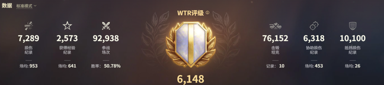

坦克世界封号情况与规避方法全解析
更新日期：2025年10月31日
以下内容依据360国服的状况进行编写，其它服务器可能存在差异。
一、封号核心情况
1.1 封号类型、时长及系统提示
| 封号类型 | 封号时长 | 系统封号提示 |
|---|---|---|
| 违规插件 | 第一次封禁7天，第二次永久封禁 | 未遵循公平游戏政策 |
| 送死挂机 | 第一次直接永久封禁 | 检测到使用脚本的违规行为 |
| 透视卡房 | 第一次封禁180天 | 未遵循公平游戏政策 |
| 伤害队友 | 第一次封禁1小时，后续逐级递增（1天、3天、7天、30天等） | 误伤队友 |
1.2 官方封号判定依据
- 根据系统内的特定文件进行行为判断；
- 根据其他玩家举报并提供的录像文件进行核实判断；
- 根据服务器后台筛选的异常数据进行判断。
1.3 封号概率与数据筛查规则
官方封号并非实时检测，会抽取不同时间段的异常数据进行筛选，再通过人工审核执行封号操作。
举例：2025年7月执行的封号，官方可能调取2025年1月、3月某几周的游戏数据进行筛查分。所以为什么部分玩家会说自己什么事时都没有，很安全。
1.4 艺术机器人当前封号现状
目前艺术机器人存在少量封号问题，每期封号名单中仅有约1%的用户被封禁，经分析大概率是被其他玩家针对性举报导致。
二、规避封号 降低封禁风险
2.1 通用封号规避方法
- ★ 核心操作：使用更改特殊昵称工具，每月或每次封号后更改一次游戏昵称，避免被其他玩家针与官方针对；
- ★ 核心操作：每天/隔天手动打几十把游戏，模拟正常玩家行为；
- ★ 设置操作：减少每日挂机次数，可设定艺术机器人延长比赛开始时间，或仅挂机半天；
- ★ 其它操作：分享战绩时必须打码，以防被其它玩家针对。(如游戏昵称、军团名)
- ★ 其它操作：不要使用任何违规插件，同时避免辱骂其他玩家等拉仇恨的操作，以防被针对。
2.2 新号全系毕业的方法
以下是最快、最优、最安全达成全系毕业的方法并且可保证WTR稳定在5000以上。具体步骤如下：
- 新号状态下，使用艺术机器人挂够5000万个体经验（该数值约需250天完成）；
- 刷够个体经验后立即停止挂机，先躲过2-3次官方封号潮，待账号处于安全状态后，等待圣诞节期间充值1万元；
- 利用游戏内1:80-120金币与1:40全局的兑换比例，直接兑换几千万全局经验点车（换算后1元=4500点经验，比工作室代练更划算）；
- 按上述步骤操作，可轻松实现1年达成全系，且账号全程处于安全状态。
注：以上方法仅作参考，可根据自身实际游戏情况灵活调整。
三、研究与WTR评级核心说明
3.1 独家研究结论
- 严禁：使用任何违规插件，会提高封号概率；
- 避免使用：WTR评级低于2000左右的脚本，此类脚本易被官方检测；
- 亲测有效：账号可24小时挂机，实际测试24小时挂机2年账号仍正常使用，若不放心可仅挂机半天；
- 个人见解：官方不会轻易大规模封号：封号是把双刃剑，虽然优化游戏环境、安抚正常玩家，但会导致官方财报数据下滑，所以官方不会轻易使用封号手段，在后台，什么都能看见，都是明牌，官方并非视而不见，都是跟利益挂钩的；坦克世界上手难度还是很高的，对新玩家很不友好，所以官方是不会大规模进行永久封禁措施，这可能会导致加快关服速度，所以基本上封禁7天的居多，然后定期封禁一些玩家来安抚正常玩家。这就是官方的高明之处，既要又要。
3.2 WTR评级（坦克世界评级）全解析
WTR是World of Tanks Rating的缩写，即坦克世界评级，是评估玩家游戏表现的核心指标，也是判断挂机行为的重要依据。
▍WTR评级简单描述
- 通过WTR评级可直观判断账号是否存在挂机行为；
- 正常玩家的WTR评级通常在5000-6000左右；
- 有挂机行为的玩家WTR评级通常在3000以下；
- 使用艺术机器人的玩家WTR评级通常稳定在5000左右。
WTR评级数据参考图

▍WTR评级核心信息
计算方式
单独计算每辆坦克的评级，将各坦克评级（按战斗场数）与坦克等级系数相乘，求和后除以账号总战斗场数，再乘以最佳坦克表现系数，最终得出个人WTR评级。
数据范围
仅基于标准模式数据计算，不同模式玩法差异大，仅计入标准模式可保证统计数据的一致性。
作用体现
反映玩家整体水平，匹配同评级队友；展示传奇武装配置；可查看自身在全服的排名，及单坦克的使用水平。